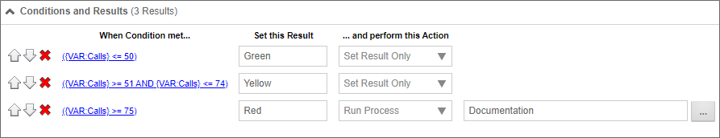

Goals are used to set a global state in the Process Director system, and to perform actions when a global state change occurs. A Goal returns a value, or set of values, based on conditions that the Goal regularly evaluates, on a schedule that is specified in the Goal definition. For instance, you can set a Goal to execute daily, hourly, etc., and set a global system state when the execution occurs.
Goals incorporate two completely distinct components: execution and examination. Execution occurs when the Goal evaluates the conditions and sets the state or value that results from the evaluation. Examination occurs when a another Process Director object references the Goal to retrieve the value that was set during the execution. Referencing a Goal (the examination) will always produce the result from the last time that Goal was executed. The Goal will return a null string if it has never evaluated, otherwise the examination will always produce the value resulting from the most recent execution.
Scheduled execution makes the Goal uniquely suited for evaluating conditions that are processor-intensive. Unlike a system variable that is executed when referenced (e.g., when called from a Form or Process Timeline), Goals are only executed on their configured schedule. So, you can schedule a processor-intensive Goal execution at a time when usage is low. When another object references the Goal, the Goal does not re-execute. It merely sends the value that was set during the last scheduled execution. Many different processes, therefore, may use the same Goal without placing a strain on the server, because the Goal will only execute when scheduled.
Goals also can initiate actions, either explicitly, or implicitly. If a Goal changes state after a scheduled execution, the Goal can initiate a process or a run a Knowledge View automatically when the state changes, which we refer to as an explicit action. Alternatively, a running Timeline instance may use a Goal's value to determine which Activities to run, or which users to assign to an activity, which we refer to as an implicit action.
Let's examine a scenario in which a Goal might be useful. Imagine a call center that takes customer support requests. This customer center normally takes 50 or fewer callers per hour. If the number of calls per hour exceed 50 calls, you might want to assign additional users to take support calls. If there are more than 75 calls per hour, you might wish to notify managers of heavy call volume. In this scenario, you could create a Goal that checks the number of calls per hour every fifteen minutes. When then Goal evaluates, it sets a status of "Green" when there are 50 calls or less per hour, "Yellow" when there are 50-75 calls per hour, and "Red" when there are more than 75 calls per hour. In the Goal, you could also automatically start a new process that sends notifications to managers if the system status changes to "Red". In your process, you could add additional users to whom to assign tasks when the status is "Yellow" or "Red". In this example, using a Goal both alters how your process is performed and starts a new process when conditions require it.

The ability to start a process based on a Goal, along with the ability to schedule Goal evaluation, enables Process Director to schedule processes without having to use the Windows Scheduler.
In addition, results for a Goal can be evaluated from a Business Value, giving you the ability to schedule processes based on information from your outside CRM, ERP, or other systems. For example, you can use a Business Value to return any unprocessed Invoices or POs from your ERP system. The Goal can evaluate the Business Value at a desired interval, and, if there are unprocessed items, automatically start the PO or Invoice process to process the items. Moreover, you can return any required data to update your ERP system during the processing or after the processing is complete. In effect, simply entering a new invoice and PO into the ERP system would automatically start the PO or Invoice process—and ultimately update your external ERP system—when the Goal is evaluated. In this example, you would no longer need to manually start the process by filling out and submitting a Form.
Combined with the access to external data available through the Business Value feature, Process Director is a powerful process automation system, enabling automatic process initialization in response to changes to external systems.
To see how to configure a Goal object, please continue to the Configuring Goals topic.